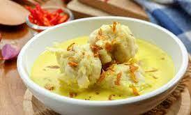
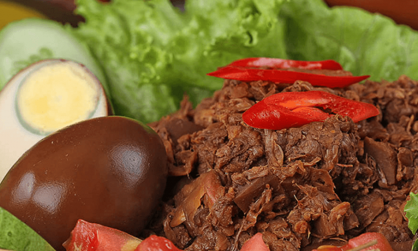
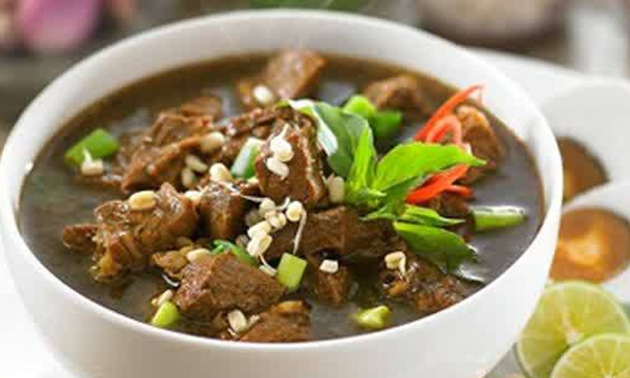
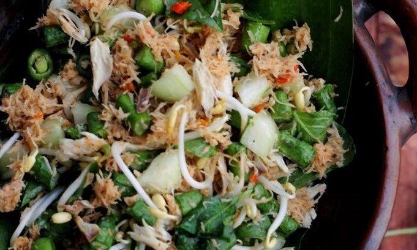
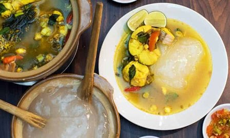

|
Provinsi Nangroe Aceh DarussalamSie Reuboh |
|---|---|
 |
Provinsi RiauGulai Belacan |
|  |
Provinsi Sumatera SelatanCelimpungan |
 |
Provinsi DKI JakartaSoto Betawi |
|  |
Provinsi DI YogyakartaGudeg |
|  |
Provinsi Jawa TimurRawon |
 |
Provinsi BaliAyam Betutu |
 |
Provinsi Nusa Tenggara TimurJagung Catemak |
 |
Provinsi Kalimantan TengahUmbut Rotan |
 |
Provinsi Sulawesi UtaraBubur Manado |
 |
Provinsi GorontaloSate Tuna |
|  |
Provinsi MalukuKohu-Kohu |
|  |
Provinsi PapuaPapeda |